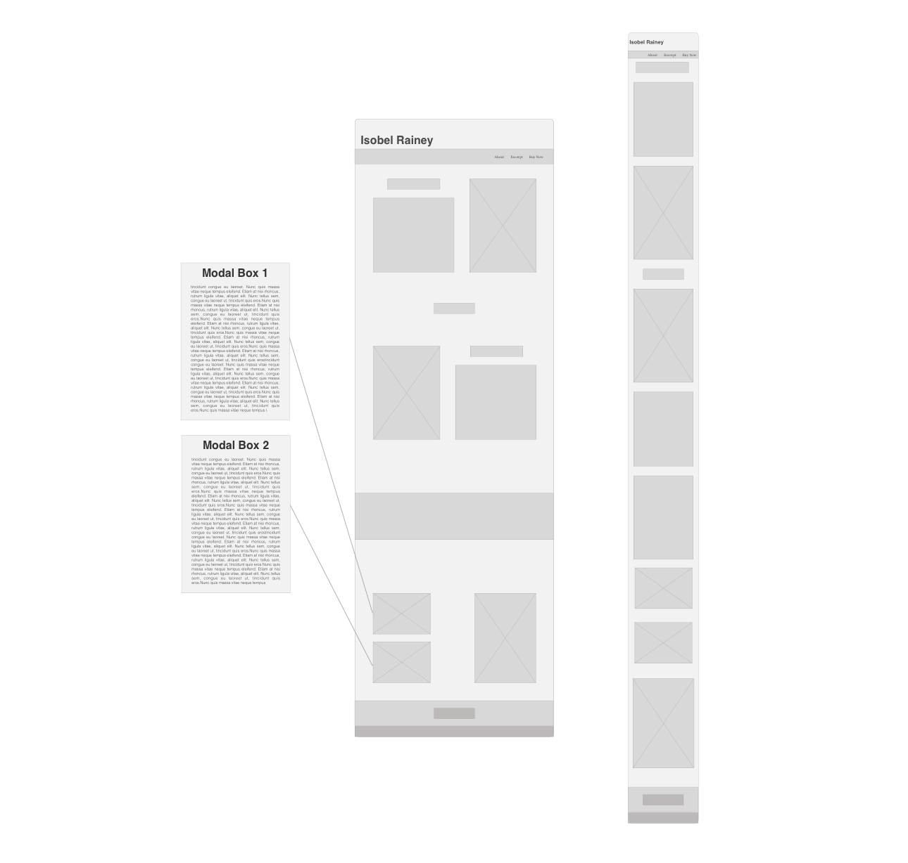
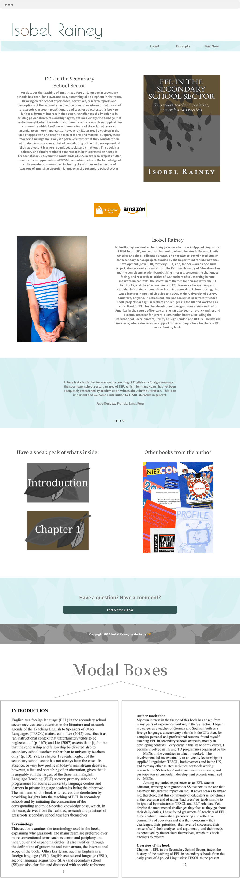
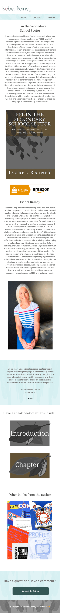

loading...
My friend, and author/educator, approached me and asked if I would be able to make her a website to promote the new book she was in the process of publishing. I thought it would be a great opportunity to apply what I had been learning to a real world project and quickly accepted her offer.
She had no real guidelines for the sort of website she wanted, so I began by imagining what sort of information a book website should hold. Obviously it should point users to where they can buy the book, so I made sure that the CTA (a large and bright "buy on Amazon" button) was very clear and obviously marked. Since the author wanted this to be less a personal site and more of a site dedicated to the book, I decided to put the book and book's information prominently displayed as the first thing on the page. If the user decides to continue to read after seeing the book information, they can view a bit more information about the author. Following the most important book and author information, I wanted to hark back to the book, why the user visted the page in the first page, with quotes from experts who have read and can vouch for the book's worth. To finish we have links to other books she has contributed to, a few short excerpts from the book, and a clear "contact" button.
I love how this site looks on mobile. All of the buttons pop and it is really easy to navigate. This was my first time to use bootstrap on a site. It was a really easy way to get started on the site and disecting the source CSS gave me lots of insight into how frameworks function in general. Personally, I prefer smaller frameworks like "Skeleton" which is much more lightweight from the start, or just to create my own small framework specific for the site's needs, to make my code as sparce as possible.
The book's cover was already designed when I was asked to make this site, so I tried to subtely incorportate the leaf theme found on the cover into my header and footer to give the site a connected feel. It actually made my job as a designer quite a bit easier because I had a color and design base to launch my own webpage design from. I proposed to the author that I could make this into a wordpress theme for her so it would be easily editable, but she declined and said she won't be changing it in the near future. Therefore we are continuing to host it from github pages with a custom google domain. I think we are both really happy with how the design turned out and it was a great learning experience for bootstarp, wordpress (I actually ended up making the page into a wordpress theme which never got used), and custom google domains. Please feel free to visit the actual website in the wild to see how the Javascript and responsiveness look and feel on various web browsers.
 